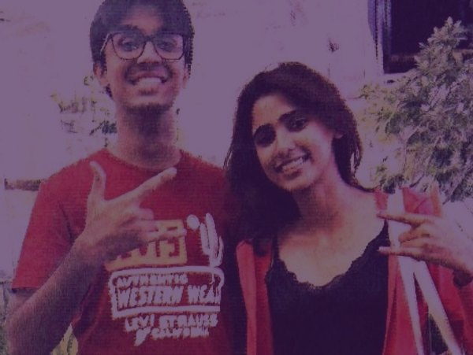
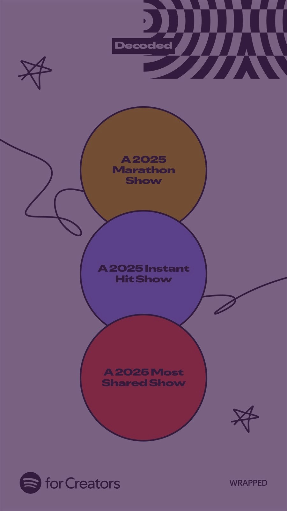
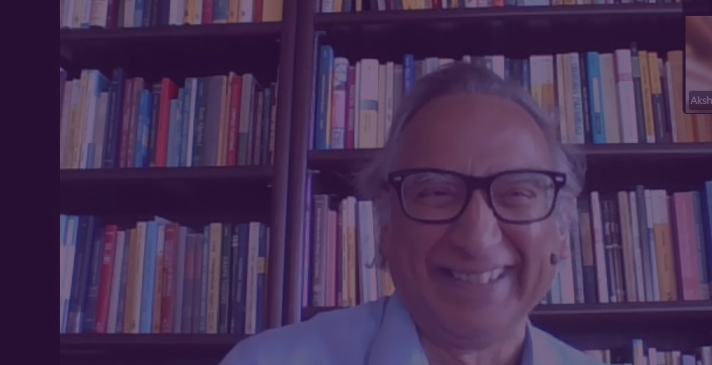

Latest from the show

Cary Krosinsky on Whether the Financial System Can Fix Itself | Decoded x HERizon

A free podcast and classroom: conversations with researchers, founders, and policymakers, made clear for everyone.
Economics and technology decide how we live, yet the ideas stay locked behind academic walls. Decoded breaks them down for everyone, without the jargon.
Guests are people with deep expertise and a public body of work: professors, researchers, senior diplomats, policy experts, authors, and scientists. Every conversation is recorded online and published free, for everyone.




Our mission is to make the conversations that usually stay inside universities, boardrooms, and ministries open to everyone. We speak with researchers, founders, and policymakers about their work and ideas, then break it down without the jargon: a podcast and a free classroom in one.
Peter Hegemann (Nobel Prize in Physiology or Medicine, 2026) is joining us for an upcoming episode. The prize was awarded for discoveries concerning light-gated ion channels and optogenetics.
Stay tuned